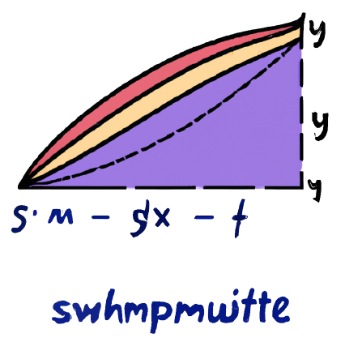
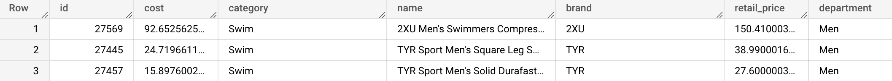
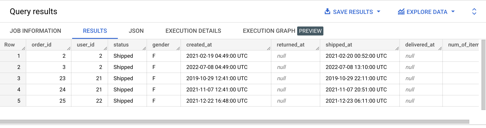

SELECT *
FROM bigquery-public-data.thelook_ecommerce.products
LIMIT 3;

{% include practice_problems_intructions.html %}bigquery-public-data.thelook_ecommerce.orders
Write a query that displays all columns from the orders table and uses the LIMIT command to restrict the result set to only 5 rows.

SELECT *
FROM bigquery-public-data.thelook_ecommerce.orders
LIMIT 5;